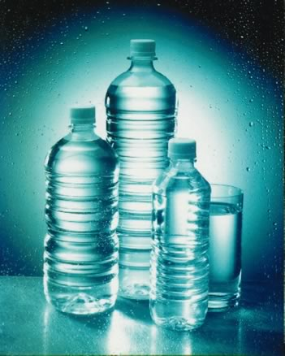

Вода в эко-таре: как выбрать безопасный пластик для здоровья и природы
Когда мы заказываем воду, мы часто обращаем внимание на её состав, но забываем о том, в чем эта вода хранится. Пластик бывает разным: один из него безопасен, а другой может выделять в воду вредные вещества, такие как бисфенол-А (BPA), особенно при перепадах температуры.
В чем опасность дешевого пластика?
Некачественная тара из полиэтилена низкого давления или повторно переработанного пластика сомнительного происхождения может стать источником проблем:
- Миграция токсинов. При нагреве или длительном хранении дешевый пластик может выделять химические соединения, которые имитируют гормоны в организме человека.
- Пористость. Дешевый пластик имеет микропоры, в которых могут скапливаться бактерии, если бутыль была плохо промыта.
- Экологический след. Одноразовые бутылки загрязняют планету столетиями.
Стандарт безопасности Crystal Water: что такое пищевой поликарбонат?
Мы используем только сертифицированную эко-тару, которая соответствует самым строгим международным стандартам безопасности.
Почему наша тара безопасна?
- Пищевой поликарбонат. Этот материал отличается высокой прочностью и химической инертностью. Он не вступает в реакцию с водой и не выделяет никаких вредных веществ.
- Многократная переработка. Мы используем систему оборотной тары. Это значит, что бутыли проходят профессиональную санитарную обработку и используются повторно, что радикально снижает количество пластикового мусора в Броварах и Киеве.
- Защита от внешней среды. Плотный, прозрачный пластик защищает воду от воздействия солнечных лучей и посторонних запахов.
Как проверить качество тары самостоятельно?
Если вы сомневаетесь в качестве бутыли, обратите внимание на следующие признаки:
- Маркировка. Ищите значок «треугольника» с цифрой. Для многоразовой пищевой тары обычно используется качественный поликарбонат или PET-пластик соответствующего класса.
- Прозрачность. Качественная эко-тара кристально прозрачна, без желтизны или мутности.
- Запах. Новая или правильно промытая бутыль не должна иметь резкого «пластикового» или химического запаха.
Выбирайте чистоту внутри и снаружи
Мы заботимся не только о качестве воды, но и об экологии нашего общего дома. Заказывайте воду в безопасной эко-таре от Crystal Water с доставкой в Бровары и Киев.
Заказать воду в эко-таре